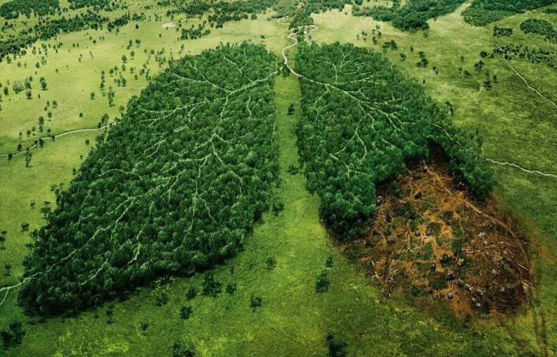

Aso arbre

Reconnue association loi 1901, nous œuvrons chaque jour pour la protection et le développement durable des forêts en portant appui à des projets de replantation dans des zones appartenant à des propriétaires privés.
Nous sommes une team de 300 experts en foresterie, répartis sur tout le territoire pour faciliter la plantation de millions d'arbres en quelques mois…
1. Nous contactons dans un 1er temps les collectivités locales pour organiser un forum « ASO ARBRES » et ensuite nous faire connaître auprès de propriétaires fonciers désireux de reboiser en vue de créer des puits de carbone et d’agir pour l’environnement.
2. Les propriétaires de terrain intéressés par notre aide signent avec nous un « pacte ASO ARBRES » dans lequel nous nous engageons mutuellement à planter a minima 200 arbres par hectare, entièrement financés par eux. En retour, nous nous chargeons des plantations et formons les propriétaires fonciers qui le souhaitent aux « gestes clef » permettant de gérer leur plantation. Notre spécificité consiste aussi à former toutes les personnes qui le souhaitent afin qu’elle perpétuent notre action
3. Une fois les plants disponibles, nous nous chargeons de les planter et d’en assurer un suivi au cours des 3 premières années. Nos capteurs arboricoles nous facilitent cette tâche à grande échelle, en nous indiquent l’état de chaque arbre en temps réel : détresse hydrique, taux de capture du CO2… Au bout de 3 ans , nous considérons que l’arbre est devenu autonome et avons formé chaque propriétaire